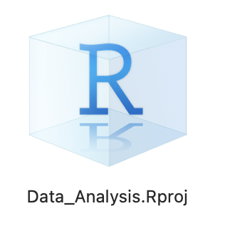

3 + 8[1] 11Avant de commencer à explorer des données dans R, il y a plusieurs concepts clés qu’il faut comprendre en premier lieu :
R et RStudio ?R ?packages ?Même si vous pensez être déjà à l’aise avec ces concepts, lisez attentivement ce chapitre et faites les exercices demandés. Cela vous rafraîchira probablement la mémoire, et il n’est pas impossible que vous appreniez une chose ou deux au passage. Une bonne maîtrise des éléments présentés dans ce chapitre est indispensable pour aborder sereinement les chapitres suivants, à commencer par le Chapitre 2, qui présente un jeu de données que nous explorerons en détail un peu plus tard. Lisez donc attentivement ce chapitre et faites bien tous les exercices demandés.
Ce chapitre est en grande partie basé sur les 3 ressources suivantes que je vous encourage à consulter si vous souhaitez obtenir plus de détails :
R et RStudio.Avant d’aller plus loin, rendez-vous sur le site de DataCamp, créez-vous un compte gratuit, et reprenez la lecture de ce livre.
R et RStudio ?Pour l’ensemble de ces TP, j’attends de vous que vous utilisiez R via RStudio. Les utilisateurs novices confondent souvent les deux. Pour tenter une analogie simple :
R est le moteur d’une voitureRStudio est l’habitacle, le tableau de bord, les pédales…Si vous n’avez pas de moteur, vous n’irez nulle part. En revanche, un moteur sans tableau de bord est difficile à manœuvrer. Il est en effet beaucoup plus simple de faire avancer une voiture depuis l’habitacle, plutôt qu’en actionnant à la main les câbles et leviers du moteur.
En l’occurrence, R est un langage de programmation capable de produire des graphiques et de réaliser des analyses statistiques, des plus simples aux plus complexes. RStudio est un “emballage” qui rend l’utilisation de R plus aisée. RStudio est ce qu’on appelle un IDE ou “Integrated Development Environment”. On peut utiliser R sans RStudio, mais c’est nettement plus compliqué, nettement moins pratique.
Si vous travaillez exclusivement sur les ordinateurs de l’Université, vous pouvez passer cette section. En revanche, si vous souhaitez utiliser R et RStudio sur votre ordinateur personnel, alors lisez attentivement la suite !
Avant tout, vous devez télécharger et installer R, puis RStudio, dans cet ordre :
R-4.3.1-x86_64.pkg” si vous êtes sous Mac avec processeur Intel, ou sur R-4.3.1-arm64.pkg si vous êtes sous Mac avec processeur M1 ou M2 (sous Mac, cliquez sur le Menu , puis sur “À propos de ce Mac” et regardez à la rubrique “Processeur”), et suivez les instructions.R depuis RStudioPuisqu’il est beaucoup plus facile d’utiliser Rstudio pour interagir avec R, nous utiliserons exclusivement l’interface de RStudio. Après les installations réalisées à la Section 1.2.1, vous disposez de 2 nouveaux logiciels sur votre ordinateur. RStudio ne peut fonctionner sans R, mais nous travaillerons exclusivement dans RStudio :
R, ne pas ouvrir ceci : RStudio, ouvrir cela : À l’université, vous trouverez RStudio dans le menu Windows, à condition d’être connecté à la machine virtuelle bio. Quand vous ouvrez RStudio pour la première fois, vous devriez obtenir une fenêtre qui ressemble à ceci :

Prenez le temps d’explorer cette interface, cliquez sur les différents onglets, ouvrez les menus, allez faire un tour dans les préférences du logiciel pour découvrir les différents panneaux de l’application, en particulier la Console dans laquelle nous exécuterons très bientôt du code R.
R ?Contrairement à d’autres logiciels comme Excel, STATA ou SAS qui fournissent des interfaces où tout se fait en cliquant avec sa souris, R est un langage interprété, ce qui signifie que vous devez taper des commandes, écrites en code R. C’est-à-dire que vous devez programmer en R (j’utilise les termes “coder” et “programmer” de manière interchangeable dans ce livre).
Il n’est pas nécessaire d’être un programmeur pour utiliser R, néanmoins, il est nécessaire de programmer ! Il existe en effet un ensemble de concepts de programmation de base que les utilisateurs de R doivent comprendre et maîtriser. Et progresser en programmation vous permettra d’automatiser de plus en plus de choses, et donc, à terme, de gagner beaucoup de temps. Par conséquent, bien que ce livre ne soit pas un livre sur la programmation, vous en apprendrez juste assez en programmation pour explorer et analyser efficacement des données.
La façon la plus simple d’interagir avec RStudio (mais pas du tout la meilleure !) consiste à taper directement des commandes que R pourra comprendre dans la Console.
Cliquez dans la console (après le symbole >) et tapez ceci, sans oublier de valider en tapant sur la touche Entrée :
3 + 8[1] 11Félicitations, vous venez de taper votre première instruction R : vous savez maintenant faire des additions !
Dans la version en ligne de ce livre (en html), à chaque fois que du code R sera fourni, il apparaîtra dans un cadre grisé avec une ligne bleue à gauche, comme ci-dessus. Vous pourrez toujours taper dans RStudio, les commandes qui figurent dans ces blocs de code, afin d’obtenir vous même les résultats souhaités. Dans ce livre, lorsque les commandes R produisent des résultats, ils sont affichés juste en dessous des blocs de code. Enfin, en passant la souris sur les blocs de code, vous verrez apparaître, à droite, une icône de presse-papier qui vous permettra de copier-coller les commandes du livre dans la console de RStudio ou, très bientôt, dans vos scripts.
Attention : il est fortement conseillé de réserver les copier-coller aux blocs de commandes de (très) grande taille, ou en cas d’erreur de syntaxe inexplicable. L’expérience a en effet montré qu’on apprend beaucoup mieux en tapant soi-même les commandes. Ça n’est que comme cela que l’on peut prendre conscience de toutes les subtilités du langage (par exemple, faut-il mettre une virgule ou un point, une parenthèse ou un crochet, le symbole moins ou un tilde, etc.). Je vous conseille donc de taper vous-même les commandes autant que possible.
Taper du code directement dans la console est probablement la pire façon de travailler dans RStudio. Cela est parfois utile pour faire un rapide calcul, ou pour vérifier qu’une commande fonctionne correctement. Mais la plupart du temps, vous devriez taper vos commandes dans un script.
Un script est un fichier au format “texte brut” (cela signifie qu’il n’y a pas de mise en forme et que ce fichier peut-être ouvert par n’importe quel éditeur de texte, y compris les plus simples comme le bloc notes de Windows), dans lequel vous pouvez taper :
R comme si vous les tapiez directement dans la console#.Les avantages de travailler dans un script sont nombreux :
Vous pouvez créer un script en cliquant dans le menu “File > New File > R Script”. Un nouveau panneau s’ouvre dans l’application. Pensez à sauvegarder immédiatement votre nouveau script en cliquant dans le menu “File > Save” ou “File > Save as…”. Il faut pour cela lui donner un nom et choisir un emplacement sur votre disque dur.
Je vous encourage vivement à créer, sur votre disque dur, un nouveau dossier spécifique, que vous nommerez par exemple Data_Analysis. Il est important que le nom de ce dossier ne contienne pas de caractères spéciaux (e.g. accents, cédilles, apostrophes, espaces, etc.). Ce dossier devrait être facilement accessible : vous y enregistrerez tous vos scripts, vos jeux de données, vos graphiques, etc.
Si vous travaillez sur les ordinateurs de l’université, créez obligatoirement votre dossier sur le disque W:\. Il s’agit de votre espace personnel sur le réseau de l’université. Cela vous garantit que vous retrouverez votre script la prochaine fois, même si vous utilisez un ordinateur différent.
À partir de maintenant, vous ne devriez plus taper de commande directement dans la console. Tapez systématiquement vos commandes dans un script et sauvegardez-le régulièrement.
Pour exécuter les commandes du script dans la console, il suffit de placer le curseur sur la ligne contenant la commande et de presser les touches ctrl + enter (ou command + enter sous macOS). Si un message d’erreur s’affiche dans la console, c’est que votre instruction était erronée. Modifiez la directement dans votre script et pressez à nouveau les touches ctrl + enter (ou command + enter sous macOS) pour tenter à nouveau votre chance. Idéalement, votre script ne devrait contenir que des commandes qui fonctionnent et des commentaires expliquant à quoi servent ces commandes.
Voici un exemple de script que je ne vous demande pas de reproduire. Lisez simplement attentivement son contenu :
# Penser à installer le package ggplot2 si besoin
# install.packages("ggplot2")
# Chargement du package
library(ggplot2)
# Mise en mémoire des données de qualité de l'air à New-York de mai à
# septembre 1973
data(airquality)
# Affichage des premières lignes du tableau de données
head(airquality)
# Quelle est la structure de ce tableau ?
str(airquality)
# Réalisation d'un graphique présentant la relation entre la concentration
# en ozone atmosphérique en ppb et la température en degrés Fahrenheit
ggplot(data = airquality, mapping = aes(x = Temp, y = Ozone)) +
geom_point() +
geom_smooth(method = "loess")
# On constate une augmentation importante de la concentration d'ozone
# pour des températures supérieures à 75ºFMême si vous ne comprenez pas encore les commandes qui figurent dans ce script (ça viendra !), voici ce que vous devez en retenir :
R.#. Il est ainsi possible de conserver certaines commandes R dans le script, “pour mémoire”, sans pour autant qu’elle ne soient exécutées. C’est le cas pour la ligne # install.packages("ggplot2").Si j’exécute ce script dans la console de RStudio (en sélectionnant toutes les lignes et en pressant les touches ctrl + enter ou command + enter sous macOS), voilà ce qui est produit :
Ozone Solar.R Wind Temp Month Day
1 41 190 7.4 67 5 1
2 36 118 8.0 72 5 2
3 12 149 12.6 74 5 3
4 18 313 11.5 62 5 4
5 NA NA 14.3 56 5 5
6 28 NA 14.9 66 5 6'data.frame': 153 obs. of 6 variables:
$ Ozone : int 41 36 12 18 NA 28 23 19 8 NA ...
$ Solar.R: int 190 118 149 313 NA NA 299 99 19 194 ...
$ Wind : num 7.4 8 12.6 11.5 14.3 14.9 8.6 13.8 20.1 8.6 ...
$ Temp : int 67 72 74 62 56 66 65 59 61 69 ...
$ Month : int 5 5 5 5 5 5 5 5 5 5 ...
$ Day : int 1 2 3 4 5 6 7 8 9 10 ...
RprojectsPour travailler le plus efficacement possible avec RStudio, vous devriez créer, à l’intérieur de votre dossier de travail, un nouveau fichier très particulier, qui s’appelle, dans le jargon de RStudio, un Rproject.
Pour le créer, cliquez simplement dans le Menu “File > New Project…”. Cette boîte de dialogue devrait apparaître :
Choisissez “Existing Directory”, puis, dans la boîte de dialogue suivante :
cliquez sur “Browse…”, naviguez jusqu’au dossier que vous avez créé plus tôt sur votre disque dur et qui contient votre script, puis cliquez sur “Create Project”. La fenêtre de RStudio se ferme, puis une nouvelle fenêtre vierge apparaît. En apparence, rien n’a changé ou presque. Pourtant :
RStudio, le logiciel indique maintenant que vous êtes bel et bien à l’intérieur d’un Rproject. Au lieu de Project: (None), on lit maintenant le nom du Rproject (chez moi, Data_Analysis)Rproject, cet onglet présentait le chemin vers le dossier utilisé par défaut par le logiciel, ainsi que son contenu. Il s’agissait d’un dossier système auquel il vaut mieux ne pas toucher pour éviter les problèmes. Après la création du Rproject, l’onglet “Files” indique le contenu du dossier contenant le projet. Autrement dit, c’est ici que vous trouverez vos scripts, tableaux de données dans différents formats, figures sauvegardées, etc. Dans cet onglet, vous pouvez donc cliquer sur le nom de votre script pour l’ouvrir à nouveau, le modifier, l’exécuter…RprojectRProject.Rproj a été créé dans votre dossier de travail. La prochaine fois que vous voudrez travailler dans RStudio, il vous suffira de double-cliquer sur ce fichier dans l’explorateur de fichier de Windows ou le Finder de MacOS, pour que RStudio s’ouvre, et que vous retrouviez tous vos fichiers et scripts de la fois précédente
Pour vérifier que tout s’est bien passé jusqu’ici, tapez la commande suivante dans votre script puis envoyez-la dans la console en pressant les touches ctrl + entrée (ou command + entrée sous MacOS).
getwd()RStudio doit vous afficher, dans la console, le chemin jusqu’à votre répertoire de travail ou “Working Directory” en anglais (getwd() est l’abréviation de “GET Working Directory”). Si tout s’est bien passé, ce chemin doit être celui du dossier qui contient votre script et le fichier .Rproj que vous venez de créer. Si ce n’est pas le cas, reprenez calmement toutes les étapes décrites depuis le début de la Section 1.3.2. Si ça ne fonctionne toujours pas, contactez-moi sur Slack.
Les Rprojects sont un moyen très pratique de travailler efficacement dans RStudio car ils permettent de gérer facilement la question du répertoire de travail. Lorsque vous envisagez de travailler sur un nouveau sujet/projet/jeu de données/compte-rendu de TP…, les étapes à suivre, pour vous mettre dans une configuration idéale qui vous évitera bien des problèmes par la suite, sont donc les suivantes :
RStudioRStudio vous propose d’enregistrer votre script dans le dossier de votre Rproject, ce qui est parfait.getwd() dans votre script et exécutez cette commande en l’envoyant dans la console.Si le chemin qui s’affiche est celui du dossier contenant votre Rproject et votre script, félicitation, vous êtes prêt·e à travailler. Avec un peu d’habitude, ces étapes ne prennent qu’une à deux minutes.
Après ces considérations techniques sur l’utilisation et les réglages de RStudio, nous entrons maintenant dans le vif du sujet avec la découverte des premiers éléments de syntaxe du langage R.
Pour vous présenter les concepts de base et la terminologie de la programmation dont nous aurons besoin, vous allez suivre des tutoriels en ligne sur le site de DataCamp. Pour cette première prise en main, tout va maintenant se passer dans votre navigateur internet, et vous pouvez donc mettre de côté RStudio pour l’instant. Vous allez voir que l’interface de DataCamp ressemble à une version simplifiée de l’éditeur de script et de la console de RStudio : vous n’aurez pas à vous soucier des réglages, de Rprojects ou de sauvegarder quoi que ce soit. Si vous avez correctement créé votre compte gratuit DataCamp comme indiqué au tout début de la Chapitre 1, votre progression sera sauvegardée automatiquement. Il vous suffit de cliquer sur les liens direct ci-dessous pour démarrer les tutoriels en ligne.
Avant de démarrer, quelques précisions :
Il est important de noter que, bien que ces tutoriels sont d’excellentes introductions, une lecture seule, même attentive, est insuffisante pour un apprentissage en profondeur et une rétention à long terme. Il faut pour cela pratiquer et répéter. Outre les exercices demandés dans DataCamp, que vous devez effectuer directement dans votre navigateur, je vous encourage à prendre des notes, à multiplier les essais, directement dans la console de RStudio, ou, de préférence, dans un script que vous annoterez, pour vous assurer que vous avez bien compris chaque partie.
Allez maintenant découvrir le cours d’introduction à R sur DataCamp, et cliquez sur les liens des chapitres ci-dessous. Au fur et à mesure de votre travail, notez les termes importants et ce à quoi ils font référence.
R sous forme de factorsdata.frame
data.frames sont similaires aux feuilles de calcul rectangulaires que l’on peut produire dans un tableur. Dans R, ce sont des objets rectangulaires (des tableaux !) contenant des jeux de données : les lignes correspondent aux observations et les colonnes aux variables décrivant les observations. La plupart du temps, c’est le format de données que nous utiliserons. Plus de détails dans le Chapitre 2Avant de passer à la suite, il nous reste 2 grandes notions à découvrir dans le domaine du code et de la syntaxe afin de pouvoir travailler efficacement dans R : les opérateurs de comparaison d’une part, et les fonctions d’autre part. Pour les découvrir et expérimenter, et puisque vous avez terminé les tutoriels DataCamp, reprenez maintenant RStudio et travaillez dans votre script.
Comme leur nom l’indique, ils permettent de comparer des valeurs ou des objets. Les principaux opérateurs de comparaison sont :
== : égal à!= : différent de> : supérieur à< : inférieur à>= : supérieur ou égal à<= : inférieur ou égal àAinsi, on peut tester si 3 est égal à 5 :
3 == 5[1] FALSELa réponse est bien entendu FALSE. Est-ce que 3 est inférieur à 5 ?
3 < 5[1] TRUELa réponse est maintenant TRUE. Lorsque l’on utilise un opérateur de comparaison, la réponse est toujours soit vrai (TRUE), soit faux (FALSE).
Il est aussi possible de comparer des chaînes de charactères :
"Bonjour" == "Au revoir"[1] FALSE"Bonjour" >= "Au revoir"[1] TRUEManifestement, “Bonjour” est supérieur ou égal à “Au revoir”. En fait, R utilise l’ordre alphabétique pour comparer les chaînes de caractères. Puisque dans l’alphabet, le “B” de “Bonjour” arrive après le “A” de “Au revoir”, pour R, “Bonjour” est supérieur à “Au revoir”.
Il est également possible d’utiliser ces opérateurs pour comparer un chiffre et un vecteur :
tailles_pop1 <- c(112, 28, 86, 14, 154, 73, 63, 48)
tailles_pop1 > 80[1] TRUE FALSE TRUE FALSE TRUE FALSE FALSE FALSEIci, l’opérateur nous permet d’identifier quels éléments du vecteur taille_pop1 sont supérieurs à 80. Il s’agit des éléments placés en première, troisième et cinquième positions.
Il est aussi possible de comparer 2 vecteurs qui contiennent le même nombre d’éléments :
tailles_pop2 <- c(114, 27, 38, 91, 54, 83, 33, 68)
tailles_pop1 > tailles_pop2[1] FALSE TRUE TRUE FALSE TRUE FALSE TRUE FALSELes comparaisons sont ici faites élément par élément. Ainsi, les observations 2, 3, 5 et 7 du vecteur tailles_pop1 sont supérieures aux observations 2, 3, 5 et 7 du vecteur tailles_pop2 respectivement.
Ces vecteurs de vrais/faux sont très utiles car ils peuvent permettre de compter le nombre d’éléments répondant à une certains condition :
sum(tailles_pop1 > tailles_pop2)[1] 4Lorsque l’on effectue une opération arithmétique (comme le calcul d’une somme ou d’une moyenne) sur un vecteur de vrais/faux, les TRUE sont remplacés par 1 et les FALSE par 0. La somme nous indique donc le nombre de vrais dans un vecteur de vrais/faux, et la moyenne nous indique la proportion de vrais :
mean(tailles_pop1 > tailles_pop2)[1] 0.5Note : Attention, si les vecteurs comparés n’ont pas la même taille, un message d’avertissement est affiché :
tailles_pop3 <- c(43, 56, 92)
tailles_pop1[1] 112 28 86 14 154 73 63 48tailles_pop3[1] 43 56 92tailles_pop3 > tailles_pop1Warning in tailles_pop3 > tailles_pop1: la taille d'un objet plus long n'est
pas multiple de la taille d'un objet plus court[1] FALSE TRUE TRUE TRUE FALSE TRUE FALSE TRUEIci, R renvoie un résultat, accompagné d’un message d’avertissement qui nous indique que tout ne s’est probablement pas déroulé comme on le pensait. Dans un cas comme celui là, R va en effet recycler l’objet le plus court, ici tailles_pop3 pour qu’une comparaison puisse être faite avec chaque élément de l’objet le plus long (ici, tailles_pop1). Ainsi, 43 est comparé à 112, 56 est comparé à 28 et 92 est comparé à 86. Puisque tailles_pop3 ne contient plus d’éléments, ils sont recyclés, dans le même ordre : 43 est comparé à 14, 56 est comparé à 154, et ainsi de suite jusqu’à ce que tous les éléments de tailles_pop1 aient été passés en revue.
Ce type de recyclage est très risqué car il est difficile de savoir ce qui a été comparé avec quoi. En travaillant avec des tableaux plutôt qu’avec des vecteurs, le problème est généralement évité puisque toutes les colonnes d’un data.frame contiennent le même nombre d’éléments.
Il ne faut pas confondre message d’erreur et message d’avertissement :
Error ou Erreur et indique que R n’a pas compris ce que vous lui demandiez. Il n’a donc pas été en mesure de faire quoi que ce soit et votre commande n’a donc pas été exécutée. Vous devez absolument revenir à votre code et corriger la commande fautive car il y a fort à parier que si vous ne le faites pas, les commandes suivantes renverrons à leur tour un message d’erreur. Il est donc important de toujours revenir à la première erreur d’un script et de la corriger avant de passer à la suite.Warning et vous indique que quelque chose d’inhabituel, ou de “non-optimal” a été réalisé. Un résultat a été produit, mais peut-être n’est-il pas conforme à ce que vous attendiez. La prudence est donc requise.Dans les deux cas, un message explique de façon plus ou moins claire ce qui a posé problème. Progresser dans la maîtrise du logiciel et du langage signifie en grande partie progresser dans la compréhension de la signification de ces messages parfois obscures. Pour progresser, il faut donc commencer par lire attentivement ces messages, et tenter de comprendre ce qu’ils veulent dire.
Dernière chose concernant les opérateurs de comparaison : la question des données manquantes. Dans R les données manquantes sont symbolisées par cette notation : NA, abréviation de “Not Available”. Le symbole NaN (comme “Not a Number”) est parfois aussi observé lorsque des opérations ont conduit à des indéterminations. Mais c’est plus rare et la plupart du temps, les NaNs peuvent être traités comme les NAs. L’un des problèmes des données manquantes est qu’il est nécessaire de prendre des précautions pour réaliser des comparaisons les impliquant :
3 == NA[1] NAOn s’attend logiquement à ce que 3 ne soit pas considéré comme égal à NA, et donc, on s’attend à obtenir FALSE. Pourtant, le résultat est NA. La comparaison d’un élément quelconque à une donnée manquante fournit toujours une donnée manquante : la comparaison ne peut pas se faire, R n’a donc rien à retourner. C’est également le cas aussi lorsque l’on compare deux valeurs manquantes :
NA == NA[1] NAC’est en fait assez logique. Imaginons que j’ignore l’âge de Pierre et l’âge de Marie. Il n’y a aucune raison pour que leur âge soit le même, mais il est tout à fait possible qu’il le soit. C’est impossible à déterminer :
age_Pierre <- NA
age_Marie <- NA
age_Pierre == age_Marie[1] NAMais alors comment faire pour savoir si une valeur est manquante puisqu’on ne peut pas utiliser les opérateurs de comparaison ? On utilise la fonction is.na() :
is.na(age_Pierre)[1] TRUEis.na(tailles_pop3)[1] FALSE FALSE FALSED’une façon générale, le point d’exclamation permet de signifier à R que nous souhaitons obtenir le contraire d’une expression :
!is.na(age_Pierre)[1] FALSE!is.na(tailles_pop3)[1] TRUE TRUE TRUECette fonction nous sera très utile plus tard pour éliminer toutes les lignes d’un tableau contenant des valeurs manquantes.
Dans R, les fonctions sont des objets particuliers qui permettent d’effectuer des tâches très variées. Du calcul d’une moyenne à la création d’un graphique, en passant par la réalisation d’analyses statistiques complexes ou simplement l’affichage du chemin du répertoire de travail, tout, dans R, repose sur l’utilisation de fonctions. Vous en avez déjà vu un certain nombre :
| Fonction | Pour quoi faire ? |
|---|---|
c() |
Créer des vecteurs |
class() |
Afficher ou modifier la classe d’un objet |
factor() |
Créer des facteurs |
getwd() |
Afficher le chemin du répertoire de travail |
head() |
Afficher les premiers éléments d’un objet |
is.na() |
Tester si un objet contient des valeurs manquantes |
mean() |
Calculer une moyenne |
names() |
Afficher ou modifier le nom des éléments d’un vecteur |
order() |
Ordonner les éléments d’un objet |
subset() |
Extraire une partie des éléments d’un objet |
sum() |
Calculer une somme |
tail() |
Afficher les derniers éléments d’un objet |
Cette liste va très rapidement s’allonger au fil des séances. Je vous conseille donc vivement de tenir à jour une liste des fonctions décrites, avec une explication de leur fonctionnement et éventuellement un exemple de syntaxe.
Certaines fonctions ont besoin d’arguments (par exemple, la fonction factor()), d’autres peuvent s’en passer (par exemple, la fonction getwd()). Pour apprendre comment utiliser une fonction particulière, pour découvrir quels sont ses arguments possibles, quel est leur rôle et leur intérêt, la meilleure solution est de consulter l’aide de cette fonction. Il suffit pour cela de taper un ? suivi du nom de la fonction :
?factor()Toutes les fonctions et jeux de données disponibles dans R disposent d’un fichier d’aide similaire. Cela peut faire un peu peur au premier abord (tout est en anglais !), mais ces fichiers d’aide ont l’avantage d’être très complets, de fournir des exemples d’utilisation, et ils sont tous construits sur le même modèle. Vous avez donc tout intérêt à vous familiariser avec eux. Vous devriez d’ailleurs prendre l’habitude de consulter l’aide de chaque fonction qui vous pose un problème. Par exemple, le logarithme (en base 10) de 100 devrait faire 2, car 100 est égal à 10^2. Pourtant :
log(100)[1] 4.60517Que se passe-t’il ? Pour le savoir, il faut consulter l’aide de la fonction log :
?log()Ce fichier d’aide nous apprend que par défaut, la syntaxe de la fonction log() est la suivante :
log(x, base = exp(1))Par défaut, la base du logarithme est fixée à exp(1). Nous avons donc calculé un logarithme népérien (en base e). Cette fonction prend donc 2 arguments :
x ne possède pas de valeur par défaut : il nous faut obligatoirement fournir quelque chose (la rubrique “Argument” du fichier d’aide nous indique que x doit être un vecteur numérique ou complexe) afin que la fonction puisse calculer un logarithmebase possède un argument par défaut. Si nous ne spécifions pas nous même la valeur de base, elle sera fixée à sa valeur par défaut, c’est à dire exp(1).Pour calculer le logarithme de 100 en base 10, il faut donc taper, au choix, l’une de ces 3 expressions :
log(x = 100, base = 10)[1] 2log(100, base = 10)[1] 2log(100, 10)[1] 2Le nom des arguments d’une fonction peut être omis tant que ses arguments sont indiqués dans l’ordre attendu par la fonction (cet ordre est celui qui est précisé à la rubrique “Usage” du fichier d’aide de la fonction). Il est possible de modifier l’ordre des arguments d’une fonction, mais il faut alors être parfaitement explicite et utiliser les noms des arguments tels que définis dans le fichier d’aide.
Ainsi, pour calculer le logarithme de 100 en base 10, on ne peut pas taper :
log(10, 100)[1] 0.5car cela revient à calculer le logarithme de 10 en base 100. On peut en revanche taper :
log(base = 10, x = 100)[1] 2Une source de confusion importante pour les nouveaux utilisateurs de R est la notion de package. Les packages étendent les fonctionnalités de R en fournissant des fonctions, des données et de la documentation supplémentaires et peuvent être téléchargés gratuitement sur Internet. Ils sont écrits par une communauté mondiale d’utilisateurs de R. Par exemple, parmi les plus de 18000 packages disponibles à l’heure actuelle, nous utiliseront fréquemment :
ggplot2 pour la visualisation des données dans le Chapitre 3dplyr pour manipuler des tableaux de données dans le Chapitre 5Une bonne analogie pour les packages R : ils sont comme les apps que vous téléchargez sur un téléphone portable. R est comme un nouveau téléphone mobile. Il est capable de faire certaines choses lorsque vous l’utilisez pour la première fois, mais il ne sait pas tout faire. Les packages sont comme les apps que vous pouvez télécharger dans l’App Store et Google Play. Pour utiliser un package, comme pour utiliser Instagram, vous devez :
install.packages()library() à chaque nouvelle session de travailDonc, tout comme vous ne pouvez commencer à partager des photos avec vos amis sur Instagram que si vous installez d’abord l’application et que vous l’ouvrez, vous ne pouvez accéder aux données et fonctions d’un package R que si vous installez d’abord le package et le chargez avec la fonction library(). Passons en revue ces 2 étapes.
Il y a deux façons d’installer un package. Par example, pour installer le package ggplot2 :
Rstudio :
ggplot2install.packages("ggplot2") (vous devez inclure les guillemets).En procédant de l’une ou l’autre façon, installez également les packages suivants : tidyverse et palmerpenguins. Le tidyverse est un “méta-package”, qui permet en fait d’installer de nombreux packages en une seule commande, dont ggplot2, tidyr, dplyr, magrittr et bien d’autres. Le package palmerpenguins contient un jeu de données dont nous nous servirons copieusement dans les chapitres suivants.
install.packages()
Un package doit être installé une fois seulement sur un ordinateur, sauf si une version plus récente est disponible et que vous souhaitez mettre à jour ce package. Il n’est donc pas nécessaire de laisser ces commandes dans votre script. Sinon, vous risquez de ré-installer les packages à chaque nouvelle session de travail, ce qui est inutile et consomme inutilement de la bande passante, des ressources numériques, et donc, du carbone…
Après avoir installé un package, vous pouvez le charger en utilisant la fonction library(). Par exemple, pour charger ggplot2 et dplyr tapez ceci dans la console :
library(ggplot2)
library(dplyr)Puisque ces packages font partie du tidyverse, on aurait pu les charger tous les deux (et d’autres) en une seule étape en tapant :
library(tidyverse)Quand vous exécutez une commande, si vous voyez un message d’erreur commençant par :
Error: could not find function...
c’est probablement parce que vous tentez d’utiliser une fonction qui fait partie d’un package que vous n’avez pas chargé. Pour corriger l’erreur, il suffit donc de charger le package approprié avec la commande library().
library()
Vous devrez charger à nouveau chaque package que vous souhaitez utiliser à chaque fois que vous ouvrirez une nouvelle session de travail dans RStudio (à chaque nouveau démarrage du logiciel, donc). C’est une erreur fréquente pour les débutants. Pour l’éviter, pensez bien à intégrer, tout en haut de votre script, les commandes library() nécessaires pour chaque package que vous comptez utiliser.
Dans votre dossier de travail, créez un nouveau script que vous nommerez ExoDiamonds.R. Vous prendrez soin d’ajouter autant de commentaires que nécessaire dans votre script afin de le structurer correctement.
ggplot2diamonds grâce à la commande data(diamonds)diamondsdiamants_chers qui contiendra uniquement les informations des diamants dont le prix est supérieur ou égal à $15000.